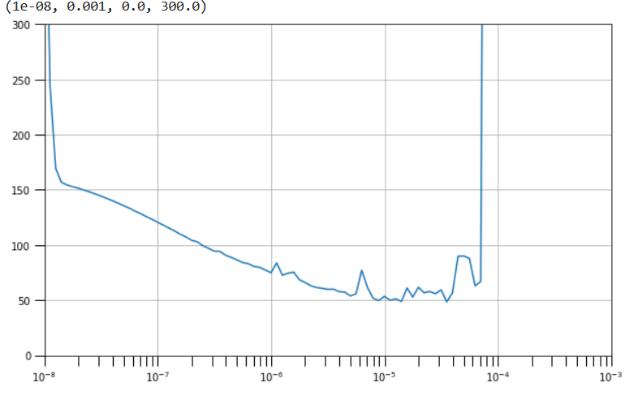

model = tf.keras.Sequential([
tf.keras.layers.Dense(512//8,activation='relu',input_shape=[input_shape]),
tf.keras.layers.Dense(512//8,activation='relu'),
tf.keras.layers.Dense(1,activation='sigmoid')
])
TensorFlow cheat sheet
Some tips for tensorflow and keras
Contents
Overview
This cheat-sheet is spilt over multiple pages and as I am still learning the material (October 2022) the nature and content will change when I get the time.
TensorFlow is from Wikipedia: a free and open-source software library for machine learning and artificial intelligence. It can be used across a range of tasks but has a particular focus on training and inference of deep neural networks.
What I really like in tensorflow (v2) is the levels of knowledge/control you can have to use it from ultra-easy to wtf. The incorporation of keras is a big part of it, as it is the easiest to use NN library. But to get more control is not that much harder.
Useful Links / Details
General
Library websites:
https://keras.io/
https://www.tensorflow.org/
Courses
I have tried both of the following courses: DeepLearning.AI TensorFlow Developer Professional Certificate and TensorFlow 2 for Deep Learning Specialization.
The Tensorflow2 course is a bit longer and goes into more depth, although there are additional extended courses for the deeplearning one. The deeplearning one can be done within the current 7 days trail period of coursera. The Tensorflow2 course is tricky to do in this timeframe. This is due to more material, the harder coursework, and waiting for capstone projects to be marked.
In the end I only did the first course of Tensorflow2 as I found the tests had material that wasn’t explained within the course and I found the lectures lacking in detail and the instructors became increasingly boring. I gave up after getting to the capstone in course 2 (of 3) when they asked a question about an NLP network that was never explained anywhere. However, the coursework is a good challenge, so it may be worth doing the course for this alone and learning from other sources in addition to this one.
I prefered the DeepLearning courses as they were more in depth and didn’t assume as much prior knowledge, and the presentation was better. I am currently working through the follow-up course TensorFlow: Advanced Techniques Specialization and given time will do the NLP and MLOps courses.
Some Others:
One by Udacity Intro to TensorFlow for Deep Learning is being offered for free and looks okay too.
TensorFlow example tutorials written as Jupyter notebooks and run directly in Google Colab—a hosted notebook environment that requires no setup. Click the Run in Google Colab button. Part of the TensorFlow resources.
Resources
-
- His book Deep Learning with Python, Second Edition can be read online.
Deep learning book by Ian Goodfellow and Yoshua Bengio and Aaron Courville
- available free online
Probabilistic Programming & Bayesian Methods for Hackers
- available online
General TensorFlow Procedure
- preprocessing the data
- create model
- e.g.
model = tf.keras.Sequential([ ....])
- e.g.
- compile the model
- e.g.
model.compile(optimizer='adam',loss='mae')
- e.g.
- fit the model
- e.g.
history = model.fit(xdata, ydata)
- e.g.
Model creations
The easiest way to create a model in Keras is through keras.Sequential, which creates a neural network as a stack of layers.
So in the examplel below - the 1st layer has units = 4 and input_shape=2 with a relu activation function - the 2nd layer has units = 3 with a relu activation function - the 3rd layer has units = 1
The 3rd layer is the output layer. Since there is no activation function this would be a regression problem to predict one value.

For non sequential models or with multiple inputs/outputs see functional API
Tabular Data
https://www.kaggle.com/code/thomassimm/premier-league-predictions-using-tensorflow
Image Data
model = tf.keras.models.Sequential([
tf.keras.layers.Convolution2D( 64,(3,3),activation='relu',input_shape=(28,28,1) ),
tf.keras.layers.MaxPool2D(2,2),
tf.keras.layers.Flatten(),
tf.keras.layers.Dense(256//2,activation='relu'),
tf.keras.layers.Dense(1,activation='sigmoid') ])Language Data
The standard language model starts with an embedding layer, this then needs to be flattened to a vector, then we can add a dense layer before an output layer.
The Embedding layer creates a vector-space for the text data. So for example, the words beautiful and ugly may be in opposite directions. And words such as cat and kitten may be close together in vector space.
GlobalAveragePooling1Dcan be replaced by Flatten()
model = tf.keras.Sequential([
tf.keras.layers.Embedding(num_words,embedding_dim,input_length=maxlen),
tf.keras.layers.GlobalAveragePooling1D(),
tf.keras.layers.Dense(24,activation='relu'),
tf.keras.layers.Dense(5,'softmax')
])The model above does not take account for the order of words,
If we want to do this we can insert an additional layer after the embedding layer. For example, by using the LSTM model as below
model_lstm= tf.keras.Sequential([
tf.keras.layers.Embedding(VOCAB_SIZE,EMBEDDING_DIM,input_length=MAXLEN),
tf.keras.layers.Bidirectional(tf.keras.layers.LSTM(32)),
tf.keras.layers.Dense(24,activation='relu'),
tf.keras.layers.Dense(NUM_CLASSES,activation='softmax')
])We can even insert a conolution layer after the embedding instead
tf.keras.layers.Conv1D(128,5,activation='relu')
For two consecutive layers of RNNs use return_sequences=True
tf.keras.layers.Bidirectional(tf.keras.layers.LSTM(lstm1_dim, return_sequences=True)),
tf.keras.layers.Bidirectional(tf.keras.layers.LSTM(lstm2_dim)),Compile the model
To compile the model, need to define the following:
- the optimizer to use, i.e. how to update the parameters to improve model during fitting
- the loss, i.e. what defines the goodness of the fit
- any metrics to record
opt = keras.optimizers.Adam(learning_rate=0.0001)
model.compile(
optimizer=opt,
loss='binary_crossentropy',
metrics=['binary_accuracy'],
)Evaluate / Predict the model
test_loss, test_accuracy = model.evaluate(scaled_test_images,
tf.keras.utils.to_categorical(test_labels),
verbose=0)
and more or less outputs depending on metrics used
pred = model.predict(X_sample)
Saving and Loading
Saving / Loading weights
model_weights_file='my_file'
model.save_weights(model_weights_file)
model.load_weights(model_weights_file)
# All the model
model.save('saved_model/my_model')
new_model = tf.keras.models.load_model('saved_model/my_model')Callbacks
within model.fit(....)
callbacks=[callback_function]
https://www.tensorflow.org/api_docs/python/tf/keras/callbacks
EarlyStopping- to stop the model early if some conditions are met
ModelCheckpoint- save the model/model weights (https://www.tensorflow.org/api_docs/python/tf/keras/callbacks/ModelCheckpoint)
- main data stored similar to ‘.data-00000-of-00001’
- https://www.tensorflow.org/tutorials/keras/save_and_load#what_are_these_files
- Can give file names with variables using {}
val_lossval_accuracybatchepoch
early_stopping = tf.keras.callbacks.EarlyStopping(
min_delta=0.0001, # minimium amount of change to count as an improvement
patience=20, # how many epochs to wait before stopping
restore_best_weights=True,
monitor='val_binary_accuracy',
)
filepath = os.path.join(cwd,'checkpoints_every_epoch/checkpoint.{epoch}.{batch}')
checkpoint = tf.keras.callbacks.ModelCheckpoint(
save_weights_only=True,
save_best_only=True,
filepath=filepath,
)Overfitting strategies
Dropout
The idea behind dropout is to randomly drop out some fraction of a layer’s input units every step of training, making it much harder for the network to learn those spurious patterns in the training data that leads to overfitting.
Instead, it has to search for broad, general patterns, whose weight patterns tend to be more robust.
You could also think about dropout as creating a kind of ensemble of networks like with RandomForests.
Example useage, apply 30% dropout to the next layer
layers.Dropout(rate=0.3),
layers.Dense(16)
Example taken from kaggle https://www.kaggle.com/code/ryanholbrook/dropout-and-batch-normalization

Batch Normalization
Normalization is important in neural networks, it can really significantly improve the results of the values of the input and output are between 0 and 1.
In contrast, it is not important in other models such as random forests. Hence, the input data is often normalised such as train_datagen = ImageDataGenerator(rescale=1./255.) in image models.
So if it is good to normalize the input data it can also be good to normalize the layers of the network. This can be done with a BatchNormalization layer.A batch normalization layer looks at each batch as it comes in, first normalizing the batch with its own mean and standard deviation, and then also putting the data on a new scale with two trainable rescaling parameters. Batchnorm, in effect, performs a kind of coordinated rescaling of its inputs.
As stated in https://www.kaggle.com/code/ryanholbrook/dropout-and-batch-normalization batchnorm: - batchnorm is most often added as an aid to the optimization process - but it can sometimes also help prediction performance - Models with batchnorm tend to need fewer epochs to complete training. - And can fix various problems that can cause the training to get “stuck”. - it can be used at almost any point in a network.
layers.Dense(16, activation='relu'),
layers.BatchNormalization(),
… or between a layer and its activation function:
layers.Dense(16),
layers.BatchNormalization(),
layers.Activation('relu'),
… Or if you add it as the first layer of your network it can act as a kind of adaptive preprocessor like Sci-Kit Learn’s StandardScaler.
Functional API
The same thing can be achived in a different way using the functional API.
Here an input is defined and then passed to the hidden layers, which in turn pass themself to the next layer
from tensorflow.keras.layers import Input, Dense, Flatten
input = Input(shape=(28,28))
x = Flatten()(input)
x = Dense(18, activation='relu')(x)
predictions = Dense(10,activation='softmax')(x)The model can then be defined from these variable like this
from tensorflow.keras.models import Model
func_model = Model(inputs = input, outputs = predictions)Multiple inputs and outputs
3 inputs and 2 outputs. Simple model
Inputs: - temp_train - nocc_train - lumbp_train
Outputs: - out1_train - out2_train
Things to note: - inputs in the model is a list of the Input() parts - concatentate is used with the input list to provide input to the next layers of the model - outputs in the model is a list of the output layers - When compiling use dictionary to set loss and metrics to each output - or lists ['binary_crossentropy','binary_crossentropy'] - When fitting, for the inputs/outputs either: - provide a list of the inputs [temp_train,nocc_train, lumbp_train] - give as a dict {'layer_name':variable_name}
## Functional: multiple inputs
# N.B. lowercase 'c' concatenate
import tensorflow as tf
from tensorflow.keras.layers import Input, Dense, concatenate
input_shape=(1,)
# get individual inputs
inputs_temp = Input(shape=input_shape,name='temp')
inputs_nocc = Input(shape=input_shape,name='nocc')
inputs_lumbp = Input(shape=input_shape,name='lumbp')
# combine them
input_list = [inputs_temp,inputs_nocc,inputs_lumbp]
input_layer =concatenate(input_list)
# add inputs to the model for two outputs
output_pred1 = Dense(2,activation='sigmoid',name='out_1')(input_layer)
output_pred2 = Dense(2,activation='sigmoid',name='out_2')(input_layer)
# output layer
output_list = [output_pred1, output_pred2]
# create the model object
model = tf.keras.Model(inputs=input_list, outputs=output_list )
# show the model
model.summary()
# Compile
model.compile(
optimizer='SGD',
loss={'out_1':'binary_crossentropy',
'out_2':'binary_crossentropy'},
metrics={'out_1':['accuracy'],
'out_2':['accuracy']},
loss_weights=[1,0.2]
)
tf.keras.utils.plot_model(model)# Define training inputs and outputs
inputs_train = {'temp': temp_train, 'nocc': nocc_train, 'lumbp': lumbp_train}
outputs_train = {'out_1': out1_train, 'out_2': out2_train}
# fit the model
model.fit(inputs_train,outputs_train)Transfer Learning
Models that can be used found here https://www.tensorflow.org/api_docs/python/tf/keras/applications
Keras Applications are premade architectures with pre-trained weights.
Inception (images)
- Load the model pre-trained weights
- Import the model architecture
- Give the model the input shape for data
- Load the weights into the model
- Freeze all the layers
- Pick out the front part of the model, as the layers to the end are more specialized
- Add extra layers to the model that can be fitted to
# 1- Download the inception v3 weights
!wget --no-check-certificate \
https://storage.googleapis.com/mledu-datasets/inception_v3_weights_tf_dim_ordering_tf_kernels_notop.h5 \
-O /tmp/inception_v3_weights_tf_dim_ordering_tf_kernels_notop.h5
# 2- Import the inception model
from tensorflow.keras.applications.inception_v3 import InceptionV3
# Create an instance of the inception model from the local pre-trained weights
local_weights_file = '/tmp/inception_v3_weights_tf_dim_ordering_tf_kernels_notop.h5'
# 3- create the model and load in the weights
pre_trained_model = InceptionV3(input_shape = (150, 150, 3),
include_top = False,
weights = None)
# 4- load weights into the model
pre_trained_model.load_weights(local_weights_file)
# 5- Make all the layers in the pre-trained model non-trainable
for layers in pre_trained_model.layers:
layers.trainable = False
# 6- Pick out part of the model
last_desired_layer = pre_trained_model.get_layer('mixed7')
last_output = last_desired_layer.output
# 7- Add extra layers to the model
# Flatten the output layer to 1 dimension
x = layers.Flatten()(last_output)
# Add a fully connected layer with 1024 hidden units and ReLU activation
x = layers.Dense(1024,activation='relu')(x)
# Add a dropout rate of 0.2
x = layers.Dropout(0.2)(x)
# Add a final sigmoid layer for classification
x = layers.Dense(1,activation='sigmoid')(x)
# Create the complete model by using the Model class
model = Model(inputs=pre_trained_model.input, outputs=x)
# Compile the model
model.compile(optimizer = RMSprop(learning_rate=0.0001),
loss = 'binary_crossentropy',
metrics = ['accuracy'])Other
Summary / info of model
model.summary()
Get summary of the model
Class or Function - Metrics and Losses
In general, classes use camel formatting CategoricalAccuracy whereas function use underscores and lower case categorical_accuracy and sometimes initials MAE
- https://www.tensorflow.org/api_docs/python/tf/keras/losses
- https://www.tensorflow.org/api_docs/python/tf/keras/metrics
Low level handling of metrics
metric.update_state()to accumulate metric stats after each batchmetric.resultget current value of metric to displaymetric.reset_state()to reset metric value typically at the end of epoch
Categorical: Binary versus Multiple
For categorical data there is a slight difference between if there are only 2 categories or more.
Going from binary to multiple: - We need to change activation in model from sigmoid to softmax in final Dense layer - Change loss function from binary_crossentropy to categorical_crossentropy in compile - Making data one-hot encoded, i.e. columns for each outcome - Or use SparseCategoricalCrossentropy
model_binary = tf.keras.Sequential([
tf.keras.layers.Dense(512//8,activation='relu',input_shape=[input_shape]),
tf.keras.layers.Dense(1,activation='sigmoid')
])
model_multi = tf.keras.Sequential([
tf.keras.layers.Dense(512//8,activation='relu',input_shape=[input_shape]),
tf.keras.layers.Dense(4,activation='softmax')
])model_binary.compile(loss='binary_crossentropy',
optimizer='adam',
metrics=['accuracy'])
model_multi.compile(loss='categorical_crossentropy',
optimizer='adam',
metrics=['accuracy'])
# One-hot encoding method
y_binary =[1,0,0,0,0,0,1,1,1,1,0,1,0,1]
y_multi=[1,2,4,6,1,3,4,2,4,2,5,2,1,4,2,1]
y_multi=tf.keras.utils.to_categorical(y_multi)
y_multiarray([[0., 1., 0., 0., 0., 0., 0.],
[0., 0., 1., 0., 0., 0., 0.],
[0., 0., 0., 0., 1., 0., 0.],
[0., 0., 0., 0., 0., 0., 1.],
[0., 1., 0., 0., 0., 0., 0.],
[0., 0., 0., 1., 0., 0., 0.],
[0., 0., 0., 0., 1., 0., 0.],
[0., 0., 1., 0., 0., 0., 0.],
[0., 0., 0., 0., 1., 0., 0.],
[0., 0., 1., 0., 0., 0., 0.],
[0., 0., 0., 0., 0., 1., 0.],
[0., 0., 1., 0., 0., 0., 0.],
[0., 1., 0., 0., 0., 0., 0.],
[0., 0., 0., 0., 1., 0., 0.],
[0., 0., 1., 0., 0., 0., 0.],
[0., 1., 0., 0., 0., 0., 0.]], dtype=float32)Alternatively, with output data like [0, 1, 4, 0, 2, 3, 3, 0, …]
use: - SparseCategoricalCrossentropy(from_logits=True)
model.compile(
loss=tf.keras.losses.SparseCategoricalCrossentropy(),
optimizer='adam',
metrics=['accuracy'])Learning rate
Find the best learning rate by using callbacks
The learning rate to use on the data below would be where the loss is low (y-axis) but not too close to where it increases or is unstable.
So for this on the downward part of the curve between 10E-6 and 10E-5
# Set the learning rate scheduler
lr_schedule = tf.keras.callbacks.LearningRateScheduler(
lambda epoch: 1e-8 * 10**(epoch / 20) )
# Set the training parameters
model_tune.compile(loss="mse", optimizer=optimizer)
# train the model
history = model_tune.fit(dataset, epochs=100, callbacks=[lr_schedule])
# plot the results
# Define the learning rate array
lrs = 1e-8 * (10 ** (np.arange(100) / 20))
# Plot the loss in log scale
plt.semilogx(lrs, history.history["loss"])
lambda functions
https://www.tensorflow.org/api_docs/python/tf/keras/layers/Lambda
tf.keras.layers.Lambda( function, output_shape=None, mask=None, arguments=None, **kwargs )
Add a function that works on the data within the model
# expand the dimensions
tf.keras.layers.Lambda(lambda x: tf.expand_dims(x, axis=-1),
input_shape=[window_size])
# make the output larger (can be useful if predicting to large values, but previous layer have activation function so values are close to 1)
tf.keras.layers.Lambda(lambda x: x * 100.0)Force CPU/GPU
https://www.tensorflow.org/tutorials/distribute/multi_worker_with_keras
# Check available CPU/GPU devices
print(tf.config.list_physical_devices('CPU'))
print(tf.config.list_physical_devices('GPU'))
with tf.device("CPU:0"):
model.fit(....)
with tf.device("GPU:0"):
model.fit(....)